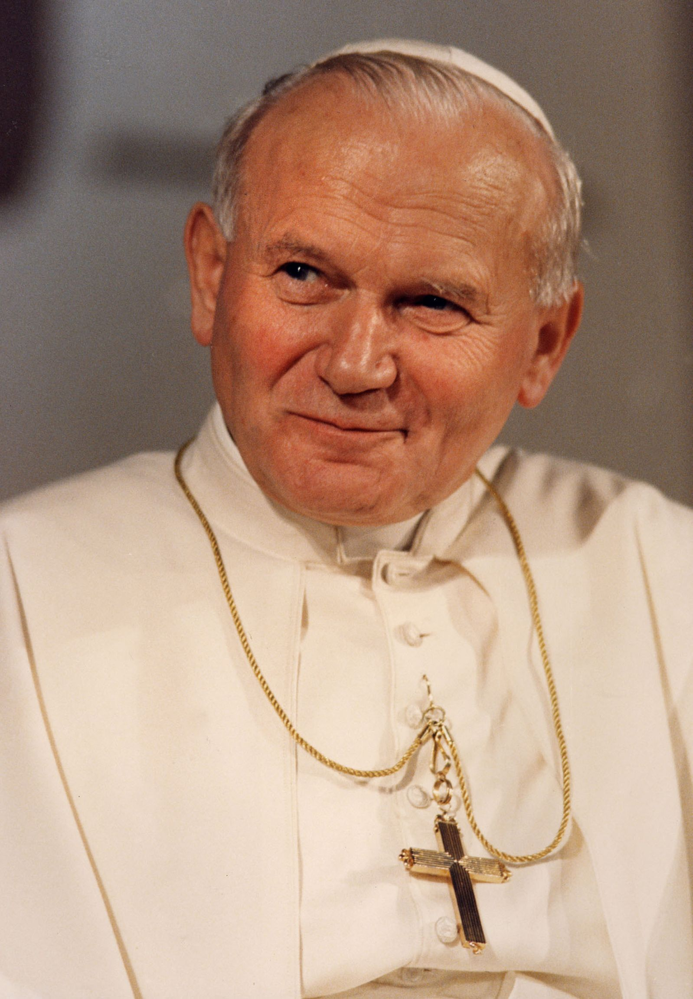
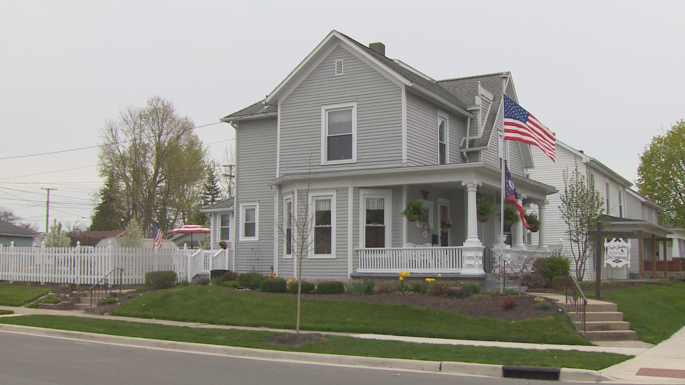

 "Juan Pablo II se basa en el Génesis que sostiene que Dios ha creado al hombre a su imagen y semejanza: varón y mujer los creó. Es una huella personal de Dios y cada quien tiene la suya. No somos masa. Hemos de descubrir a Dios por nosotros mismos, en lo profundo del alma”
Juan Pablo II nos ha hecho regresar a las raíces evangélicas de la Iglesia en la persona de Pedro. Pedro, en el Evangelio, no se presenta como un empresario que vende una nueva espiritualidad al mundo; ante todo es un testigo: en la resurrección, como predicador y después como mártir.
Juan Pablo II ha comenzado esta renovación según el espíritu de Vaticano II. Ve en el Concilio la mano providente de Dios que impulsa a la Iglesia hasta el tercer milenio, un milenio de evangelización desde el Evangelio.
El Papa favoreció el derrumbamiento del comunismo, no tanto por las relaciones diplomáticas, sino por su testimonio de pastor cristiano que afirmaba y afirma con fuerza la verdad.
 Juan Pablo II, como Papa, no poseía bienes materiales personales significativos, ya que vivía bajo un estilo de vida sencillo, siguiendo los votos de pobreza asociados a su vocación religiosa.